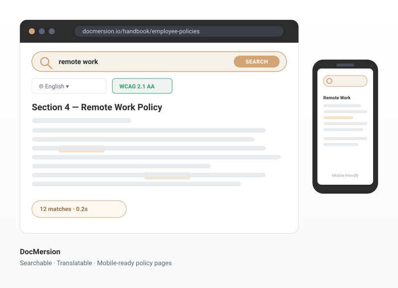
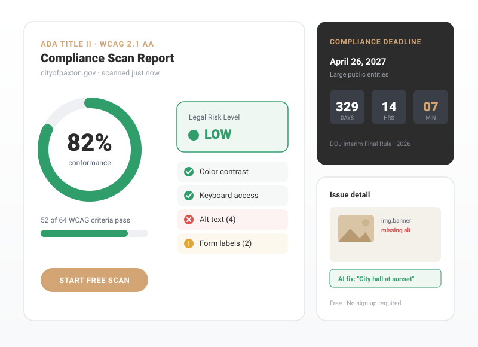
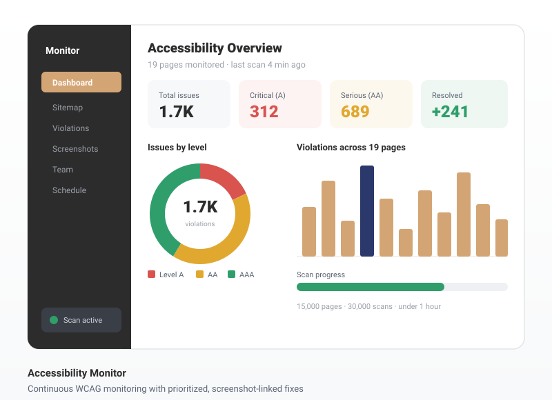
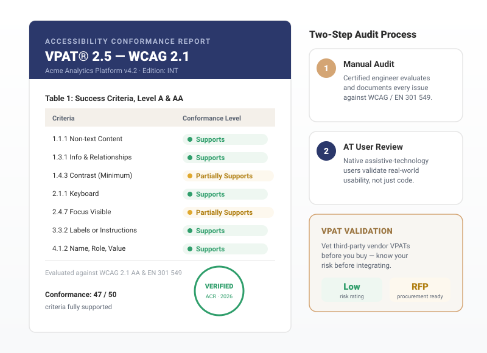

Accessibility
For All
Accessibility For All is an all-encompassing digital accessibility suite that brings auditing, monitoring, remediation, and compliant content together in one place. From WCAG 2.1 AA conformance to VPAT documentation and fully accessible native-web documents, our integrated solutions help your organization meet—and stay ahead of—ADA Title II, Section 508, and global accessibility requirements, so every visitor can access your content with confidence.
DocMersion

DocMersion turns your documents automatically into accessible experiences—fully searchable, translatable, and mobile-friendly web pages. Instead of burying information in static PDFs, everyone can instantly find, read, and understand exactly what they need. Clearer documents mean better compliance and a safer, more informed organization for all.

WCAG 2.1 AA Checker
Scan any website, app, or document against WCAG 2.1 AA—the standard tied to ADA Title II—and get an instant Legal Risk Level report in seconds, free and with no sign-up. Our checker evaluates 50+ success criteria, from color contrast and keyboard access to alt text and form labels, mapping every finding directly to your legal exposure ahead of the April 2027 deadline.
Accessibility Monitor

Accessibility isn't a one-time fix—it's ongoing. Our Accessibility Monitor continuously scans your site across your full sitemap, finds violations, and tells you which to correct first. Get one-click access to screenshots that pinpoint the exact element at fault, in-code guidance to resolve each issue, and flexible team controls. High-volume infrastructure scans thousands of pages in minutes so new content never silently breaks compliance.

VPAT and ACR
A VPAT (Voluntary Product Accessibility Template)—completed as an Accessibility Conformance Report (ACR)—documents how your digital product measures up to accessibility standards, and it's now a fundamental requirement in RFPs and procurement. Our two-step process pairs a manual audit by a certified engineer with real-world review by assistive-technology users, delivering a credible, share-ready ACR. We also validate third-party vendor VPATs before you buy, so integrations never compromise your compliance.